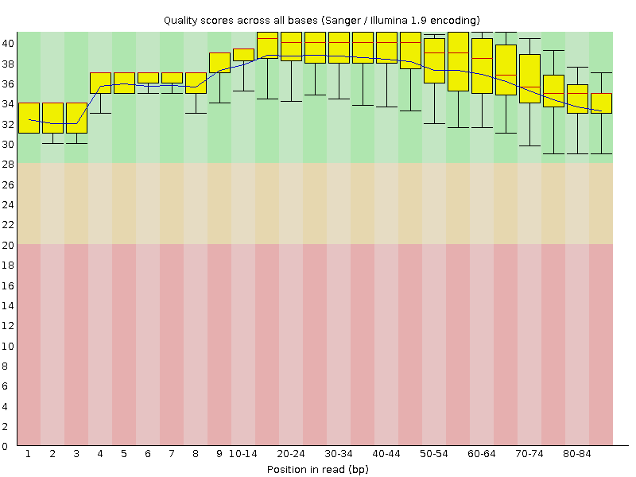
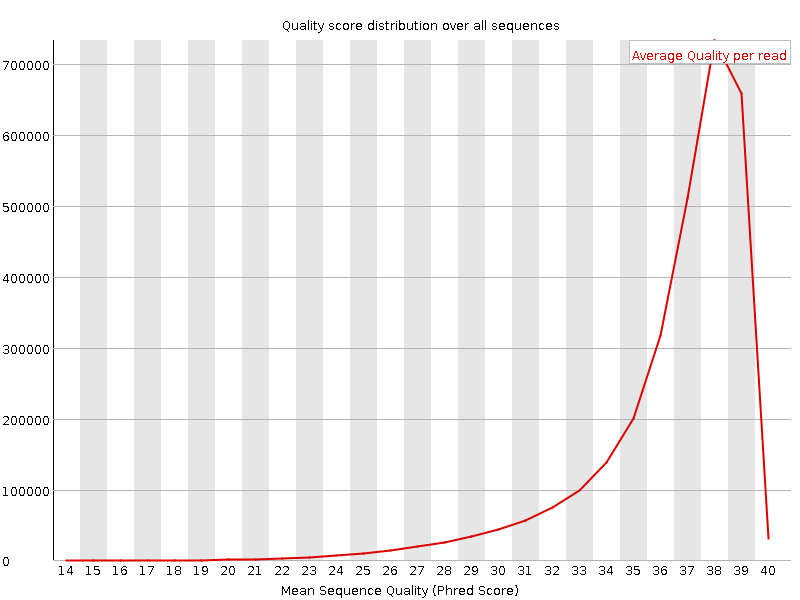
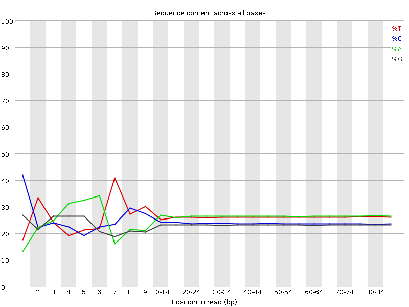
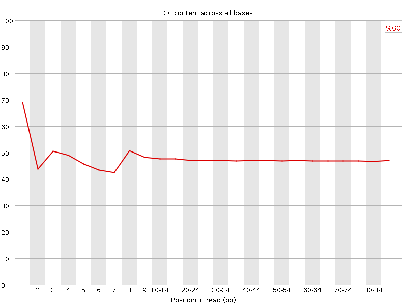
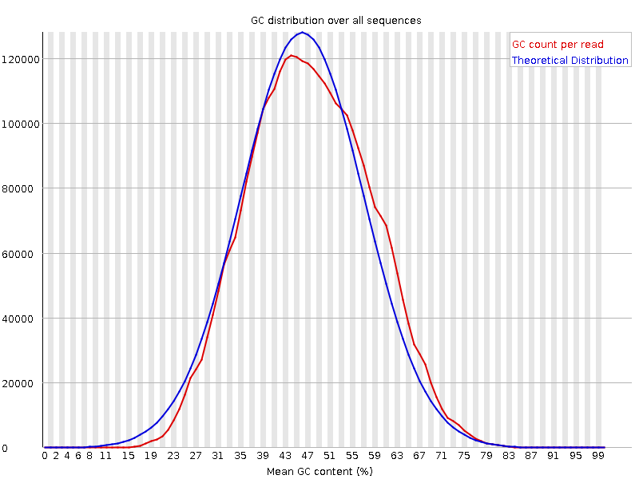
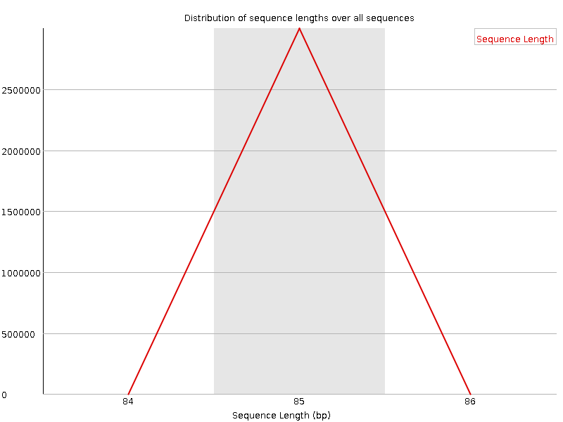
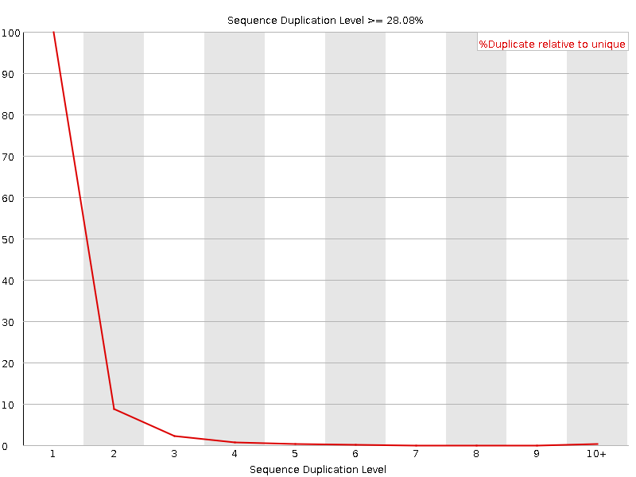
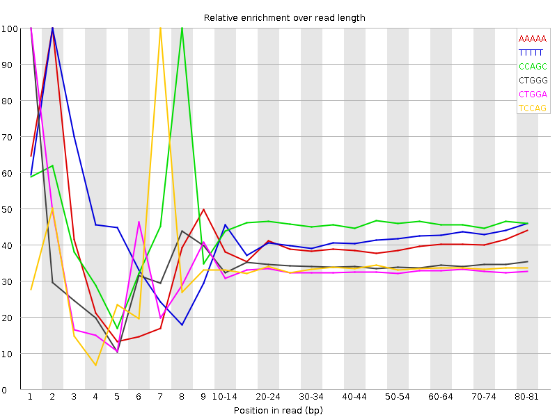

![[OK]](Icons/tick.png) Basic Statistics
Basic Statistics
| Measure | Value |
|---|---|
| Filename | c786-O.21_2.f.fastq |
| File type | Conventional base calls |
| Encoding | Sanger / Illumina 1.9 |
| Total Sequences | 2997774 |
| Filtered Sequences | 0 |
| Sequence length | 85 |
| %GC | 47 |
Per base sequence quality

Per sequence quality scores

![[FAIL]](Icons/error.png) Per base sequence content
Per base sequence content

Per base GC content

Per sequence GC content

Per base N content

Sequence Length Distribution

![[WARN]](Icons/warning.png) Sequence Duplication Levels
Sequence Duplication Levels

Overrepresented sequences
No overrepresented sequences
Kmer Content

| Sequence | Count | Obs/Exp Overall | Obs/Exp Max | Max Obs/Exp Position |
|---|---|---|---|---|
| AAAAA | 833495 | 2.6903553 | 6.831735 | 2 |
| TTTTT | 745635 | 2.4847624 | 5.8614273 | 2 |
| CCAGC | 494155 | 2.3695164 | 5.169631 | 8 |
| CTGGG | 453120 | 2.3234923 | 6.741112 | 1 |
| CTGGA | 492940 | 2.2380211 | 6.764799 | 1 |
| TCCAG | 491520 | 2.1648648 | 6.4609 | 7 |
| CAGGA | 463330 | 2.0902112 | 5.0006857 | 1 |
| CTTCA | 528195 | 2.0729861 | 5.073644 | 1 |
| CTCCA | 477740 | 2.0412707 | 5.4942417 | 6 |
| GAAAA | 523065 | 1.9068657 | 5.089331 | 1 |
| AAAAT | 580095 | 1.8844131 | 5.3295956 | 3 |
| CTTTG | 412130 | 1.6779817 | 5.0194097 | 1 |
| CTTGG | 355500 | 1.624352 | 5.0648937 | 1 |
| ATCCA | 314695 | 1.2272174 | 5.319352 | 6 |